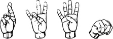
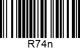
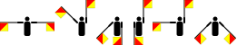
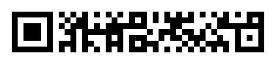
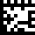
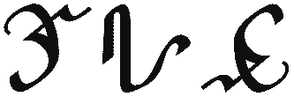

Here you may find translation-related things for the R74n Collective.
Help translate! Submit anything at all to the Feedback Form. It can be an entirely new translation, and a section here will be created for it.
Main Site
Translations for R74n.com. Translate the main page on Google Translate or Yandex Translate. See also: Logos, Capitalization
Each character is pronounced separately. It is not 'seventy-four', it is 'seven' and 'four'.
| Language | Translation |
|---|---|
| English / Multilingual | R74n |
| English (Pronunciation) | Are Seven Four en |
| English (Number Words) | R Seven Four n |
| IPA | ɑˈɹ sɛˈvʌn fɔˈɹ ɛˈn ɑː ˈsɛv(ə)n fɔː ɛn ɑːˈsɛv(ə)nfɔːɛn |
| Latin / Roman Numerals | R VII IV n R Ⅶ Ⅳ n |
| Cyrillic | Р74н |
| Greek | ΡΖ'Δʹν ῾Ρ74ν |
| Japanese (Katakana) | アー・セブン・フォー・エン アー・七・四・エン ラ74ン |
| Japanese (Hiragana) | あー・せぶん・ふぉー・えん ら74ん |
| Japanese (Gyaru-moji) | ぁ→ 世ﾌ〃ω ﾌ〃ぉ→ ぇω |
| Japanese (Romaji) | ā・sebun・fuo・en |
| English (Fullwidth) | Ｒ７４ｎ |
| Chinese | 啊七四呐 |
| Chinese (Counting Rods) | 啊𝍦𝍣呐 |
| Chinese (Tally Marks) | 啊 𝍶𝍳 𝍵 呐 |
| Korean (Hangul) | 아칠사온 |
| "Test" Numerals | Rn |
| Aegean Numerals | R𐄍𐄊n |
| Albanian (Elbasan) | 𐔙74𐔓 |
| American Sign Language |  |
| Ancient South Arabian | 𐩧𐩭𐩽𐩽𐩽𐩽𐩽𐩽𐩽𐩬 |
| Arabic (Eastern) | ر٧٤ن |
| Arabic (Western) | ر74ن |
| Armenian | Ր74ն ՐԷԴն |
| Assamese | ড়৭৪ণ |
| Aurebesh | |
| Balinese (Aksara Sualalita) | ᬭ᭗᭔ᬡ |
| Balinese (Aksara Wreṣāstra) | ᬭ᭗᭔ᬦ |
| Baybayin | ᜇ᜔74ᜈ᜔ |
| Bengali | র৭৪ন |
| Braille | ⠗⠼⠛⠼⠙⠝ |
| Cham | ꨣ꩗꩔ꨗ |
| Deseret | 𐐡74𐑌 |
| Devanagari | र७४न |
| Duployan Shorthand | 𛰋74𛰚 |
| Etruscan | 𐌓 𐌡𐌠𐌠 𐌠𐌠𐌠𐌠 𐌍 |
| Filipino (Number Words) | R Pito Apat n |
| Futhark | ᚱ74ᚾ |
| Ge'ez | ረ፯፬ነ |
| Georgian (Asomtavruli) | Ⴐ74Ⴌ ႰႦႣႬ |
| Georgian (Nuskhuri) | ⴐ74ⴌ ⴐⴆⴃⴌ |
| Georgian | რ74ნ რზდნ |
| Glagolitic | ⰓⰆⰃⰐ |
| Gothic | 𐍂•𐌶••𐌳•𐌽 |
| Gujarati | ર૭૪ન |
| Halacae | Ra-RA-LA-me |
| Hanifi Rohingya | 𐴌𐴷𐴴𐴕 |
| Hebrew | רזדנן |
| Hindu Arabic Numerals | ര74ന |
| Inuktitut | ᕐ74ᓐ |
| Javanese | ꦲꦺꦂ꧇꧗꧔꧇ꦲꦺꦤ꧀ ꦫ꧇꧗꧔꧇ꦤ |
| Jawi | ر74ن |
| Kaithi | 𑂩74𑂢 |
| Kaktovik Numerals | Rn |
| Kannada | ರ౭౪ನ |
| Kayah Li | ꤚ꤇꤄ꤔ |
| Kharosthi | 𐨪𐩃𐩀𐩀𐩀𐩃𐨣 |
| Khmer | រ៧៤ណ |
| Ladino | R74n ר74נ/רזדנן آ74 إن Р74н |
| Lao | ຣ໗໔ນ |
| Limbu | ᤖ᥍᥊ᤏ |
| Linear B (Aegean Numerals) | 𐀨𐄍𐄊𐀙 |
| Lontara | ᨑ74ᨊ |
| Lycian | 𐊕<II IIII𐊏 |
| Lydian | 𐤭74𐤫 |
| Malayalam | ര൭൪ന |
| Manchu | ᡵ᠊74ᠨ |
| Mayan Numerals | R𝋧𝋤n |
| Mon-Burmese | ရ၇၄န |
| Mongolian | ᠭ᠗᠔ᠨ |
| N'Ko | ߙ߇߄ߢ |
| Odia | ର୭୪ନ |
| Ogham | ᚛ᚏ74ᚊ᚜ |
| Old Hungarian | 𐲢𐳻𐳺𐳺 𐳺𐳺𐳺𐳺𐳙 |
| Old Makasar | 𑻭74𑻨 |
| Old Permic | 𐍠74𐍝 |
| Osmanya | 𐒇𐒧𐒤𐒒 |
| Parthian (Inscriptional) | 𐭓𐭛𐭚 𐭛𐭍 |
| Phoenician | 𐤓74𐤍 |
| Polish (Number Words) | R Siedem Cztery n |
| Polish (Pronunciation) | Er Siedem Cztery en |
| Proto-Canaanite | 𐤓74𐤍 |
| Samaritan Hebrew | ࠓࠆࠃࠍࠍ |
| Shavian | 𐑮74𐑯 |
| Sinhala (Illakkam) | ර𑇧𑇤න |
| Sinhala (Lith Illakkam) | ර෭෪න |
| Sinhala | ර74න |
| South Arabian (Ancient) | 𐩧𐩭𐩽𐩽𐩿𐩽𐩽𐩽𐩽𐩬 |
| Soyombo | 𑩼74𑩯 |
| Sundanese | ᮛ᮷᮴ᮔ |
| Sunuwar | 74 |
| Sylheti Nagri | ꠞ74ꠘ |
| Tai Tham (Lek Hora) | ᩁ᪇᪄ᨶ |
| Tai Tham (Lek Nai Tham) | ᩁ᪗᪔ᨶ |
| Tai Viet | ꪧ74ꪘ |
| Tally Marks | R 𝍸𝍷𝍷 𝍷𝍷𝍷𝍷 n |
| Tamazight (Neo-Tifinagh) | ⵔ74ⵏ |
| Tamil | ர்௭௪ந் |
| Telugu | ర౭౪న |
| Thaana | ރ74ނ |
| Thai | ร74น ร๗๔น |
| Tibetan | ར༧༤ན |
| Toki Pona (nimisin) | R likujo po n |
| Toki Pona | kulupu R74n kulupu Asepone |
| Wolof (Garay) | |
| Jejemon / Jejenese | Rh74nn Rh74n R74nh Rh74nh RR74nh R74nn R74n RR74n |
| English (Pirate) | aRRRRR74n |
| Code | Mapping |
| Unicode Codepoints | U+0052 U+0037 U+0034 U+006E U+52 U+37 U+34 U+6E |
| Unicode Codepoints (Escaped) | \u0052\u0037\u0034\u006E |
| Unicode Codepoints (CSS) | \0052\0037\0034\006E |
| Unicode Codepoints (HTML) | R74n |
| URL Encoding | %52%37%34%6E |
| Unary | 1111111111111111111111111111111111111111111111111111111111111111111111111111111111 1111111111111111111111111111111111111111111111111111111 1111111111111111111111111111111111111111111111111111 11111111111111111111111111111111111111111111111111111111111111111111111111111111111111111111111111111111111111 |
| Binary | 01010010001101110011010001101110 01010010 00110111 00110100 01101110 |
| A1Z26 | 18 19 5 22 5 14 6 15 21 18 14 |
| Barcode (Code 39) | ▮||▮ | || |▮▮ || ▮|▮ ||▮| ▮ |
| Barcode (Code-128) |  |
| Bookshelf Symbol 7 | ɔ̀Q́Ṕ↘ |
| Brainf*ck | -[--->+<]>---.-[--->++<]>+.---.+++[->++<]>. |
| Decimal | 82 55 52 110 |
| Dutch Spelling Alphabet | Richard Zeven Vier Nico |
| Flag Semaphore |  |
| German Spelling Alphabet | Richard Sieben Vier Nordpol |
| Gray Code | 01111011001011001010111001011001 |
| Hexadecimal (NCR) | R74n |
| Hexadecimal to Color | R74n |
| Hexadecimal | 52 37 34 6e |
| ITC Zapf Dingbats | ✲✗✔■ |
| LSPK90CW | A<|¯¯_+Z |
| Malbolge | D'`$@9]!~5X92ywf.@2>=N_:nm7jGX&2$BS!Q,v^)(rqvutsl2pihmlkjihg`&dcb[Z~^]VUTxe |
| Maritime Signals | |
| Marlett | 🗙⭳⏵⬤ |
| Morse Code (Emoji) | 😘😍😘 😍😍😘😘😘 😘😘😘😘😍 😍😘 |
| Morse Code | .-. --... ....- -. |
| NATO Phon. Alph. (IPA) | ˈroːmi.oˈsɛv(ə)nˈfoʊ.ənoˈvembə |
| NATO Phon. Alph. (Respelling) | ROW me oh SEV-en FOW-er no VEM ber |
| NATO Phonetic Alphabet | Romeo Seven Four november |
| Octal | 122 67 64 156 |
| QR Code | |
| Quaternary | 1102 313 310 1232 |
| Quinary | 312 210 202 420 |
| rMQR |  |
| ROT13 | E74a |
| Russian Spelling Alphabet | Роман Семь Четыре Николай |
| Semacode |  |
| Senary | 214 131 124 302 |
| Septenary | 145 106 103 215 |
| Standard Galactic Alphabet | ∷74リ ∷ VII IV リ |
| Swedish Armed Forces' Spelling Alphabet | Rudolf Sju Fyra Niklas |
| Tap Code | .... .. ... ... |
| Ternary [Balanced] | 111!01!1!1 |
| Ternary | 10001 2001 1221 11002 |
| Undecimal | 75 50 48 a0 |
| Webdings | 🛤⏪︎⏵⬤ |
| Wingdings 2 | ☑🖷🗔⑤ |
| Wingdings 3 | ⎋⭍⭬🡘 |
| Wingdings | ☼🖮🗐■ |
| X-SAMPA | A"r\ sE"vVn fO"r\ E"n |
| Encryption | Hash |
| Base16 | 5237346E |
| Base32 | KI3TI3Q= |
| Base64 | Ujc0bg== |
| Base85 | ;E$FM |
| Base65535 | 汒𐘴 |
| CRC-32 | af428f64 |
| MD2 | fb2d96d381cd5f747e4a4a7740bc5e39 |
| MD4 | 77883492f5b06f83fe9055adcc83f5b4 |
| MD5 | e0b9a1612349a0a61fd7b96579346b58 |
| RSA512 | Gfummg3dh1ZWGGoOpFhvjeMngOsLSN5hFdyIcgIpwNqyr6+CF+qmoFkpr8FcK/QGxNgtdfJwWlVfHKpah2JSgA== |
| SHA-1 | a2e092dace0a1046fee156fcdc1d70609555be50 |
| SHA-224 | e32e7e8d746097b8af945086ace09bd2341a2ef238a6b146f83ef85c |
| SHA-256 | 3665e98f9cc28200749080a7bff5b8175b0bb4d4b0fe2e2dda6c084bd8e8e015 |
| SHA-384 | 966cd678107d3e3de5ccdd729ff7659c3cc764f9efbd00a351c0b87b586d4e3c2c0d4f00ef96d4067ff777617eb05b8b |
| SHA-512 | 90612f4a554e2495734485cc35e4038646cfb3a097ce02172d4c718329a6b7e6d4c733b10b1766da22b9e94fe9f39b50b17251a69fad4e11ca86f716ab2fcf4c |
| XXH3 | da1d55c155fe404f |
| XXH32 | dba7105e |
| XXH64 | b22b35a26291f009 |
| XXH128 | b91ae11a9e73f757acee53a26f34b316 |
R74n.com:
| Language | Translation |
|---|---|
| English | R74n.com |
| Braille | ⠗⠼⠛⠼⠙⠝⠲⠉⠕⠍ |
Also see R74n in Unicode fonts, ASCII art.
Extra English Info
- Syllable Count: 5
- R74n Anagrams: R74n, R7n4, R47n, R4n7, Rn74, Rn47, 7R4n, 7Rn4, 74Rn, 74nR, 7nR4, 7n4R, 4R7n, 4Rn7, 47Rn, 47nR, 4nR7, 4n7R, nR74, nR47, n7R4, n74R, n4R7, n47R
- Common Prefix: R74-
Sandboxels
Translations for Sandboxels.
There are both transliterations into other scripts and direct translations of the name's origin - Sandbox Pixels. Sometimes, 'squares' or 'boxes' can be used in place of 'pixels'. Sandboxels was originally called Sandbox Game for a short period.
Abbreviations: SB, SBXLS
| Script | Transliteration |
|---|---|
| Latin | Sandboxels |
| IPA | /ˈsændbɒksəls/ |
| Arabic | ساندبوكسيلس (Sandbuksils) |
| Bengali / Bangla | স্যান্ডবক্সেল (Syānḍabaksēla) |
| Braille | ⠠⠎⠁⠝⠙⠃⠕⠭⠑⠇⠎ |
| Cyrillic | Сандбохелс (Sandbohels) |
| Devanagari | सैंडबॉक्सल्स (Saindaboksals) |
| Egyptian Hieroglyphs | 𓋴𓄿𓈖𓂧𓃀𓅱𓇨𓅂𓃭𓋴 |
| Gujarati | સેન્ડબોક્સલ્સ (Sēnḍabōksalsa) |
| Hangul | 샌드박설즈 (Saendeubagseoljeu) |
| Hiragana | さんどぼっくせるず (Sando bokkuseruzu) |
| Inuktitut | ᓴᓐᑦᐳᒃᓯᓪᔅ |
| Ithkuil | esälu'i sanboksels |
| Kannada | ಸ್ಯಾಂಡ್ಬಾಕ್ಸೆಲ್ಗಳು (Syāṇḍbākselgaḷu) |
| Katakana | サンドボックセルズ (Sandobōkuseruzu) |
| Latin (Fullwidth) | Ｓａｎｄｂｏｘｅｌｓ |
| Malayalam | സാൻഡ്ബോക്സലുകൾ (Sānḍbēāksalukaḷ) |
| Telugu | శాండ్బాక్సెల్స్ (Śāṇḍbāksels) |
| Thai | แซนด์บ็อกซ์-พิกเซล (Sænd̒b̆ xks̒-phiksel) |
| Toki Pona | musi Sanpose |
| Viossa | sanbokspil |
| Language | Literal Translation |
| English / Multilingual | Sandboxels |
| Armenian | Ավազատուպիքսել (Avazatupik’sel) |
| Burmese | သဲပုံစ်ဇယ် (Sell Poneit Jaal) |
| Catalan | Sorrerels |
| Chinese | 沙盒像素 (Shā hé xiàngsù) |
| Czech | Pískovištelů |
| Danish | Sandkaxels |
| Dutch | zandbaxels |
| Esperanto | Sablokselo |
| Finnish | Hiekkalaatikseli |
| French | Pixels de Bac à Sable |
| German | Sandkastel |
| Greek | Αμμοστοιχείο |
| Hebrew | פיקסלים של ארגז חול (Pikselim Shl Yeragz Hol) |
| Hungarian | Homoképpontok |
| Icelandic | Sandkassepunktar |
| Italian | Sabbionaia |
| Japanese | 砂場要素 (Sunaba yōso) |
| Kazakh | Құмсалғышель (Qumsalğışel) |
| Latin | Elementis ex Arcae Harenae |
| Polish | Piaskowniksel |
| Portuguese | Pixel de Caixa de Areia |
| Russian | Песочницель (Pesochnitsel') |
| Sinhala | සෑන්ඩ්බොක්ස්පික්සල (SǣnḍboksPiksala) |
| Spanish | Salvadereles |
| Toki Pona | musi pi poki ko |
| Code | Mapping |
| Leet Speak | 54ND80X315 |
| Standard Galactic Alphabet | ᓭᔑリ↸ʖ𝙹 ̇/ᒷꖎᓭ |
| Wingdings | 💧♋■♎♌□⌧♏●⬧ |
| Regional Indicators | 🇸 🇦 🇳 🇩 🇧 🇴 🇽 🇪 🇱 🇸 |
| X-SAMPA | "s{ndbQks@ls |
| Conlang X-SAMPA | 's&ndbQks@ls |
| Ambigram |
Derivatives: Sandboxels Lite (SBLite), Sandboxels Wiki (SBWiki), Sandbloxian(s), Steamboxels
Extra English Info
- Syllable Count: 3
Copy Paste Dump
Translations for c.R74n.com.
The Copy Paste Dump has a Unicode font generator and many text converters.
Abbreviation: CPD
| Language | Translation |
|---|---|
| English | Copy Paste Dump |
| English (Fullwidth) | Ｃｏｐｙ Ｐａｓｔｅ Ｄｕｍｐ |
| Egyptian Hieroglyphs | 𓎢𓅱𓊪𓇌 𓊪𓄿𓋴𓏏𓅂 𓂧𓅲𓅓𓊪 |
| Braille | ⠉⠕⠏⠽ ⠏⠁⠎⠞⠑ ⠙⠥⠍⠏ |
| Toki Pona | lipu Kopipeta |
| Thai | กองคอปปี้เพสต์ |
| Italian | Scarico del copiare e impastare |
| Finnish | Kopioi-Liitä Kaatopaikka |
| Chinese (Simplified) | 复制粘贴转储 |
| Code | Mapping |
| Leet Speak | (0P7 P4573 DUMP |
| Standard Galactic Alphabet | ᓵ𝙹!¡|| !¡ᔑᓭℸ ̣ᒷ ↸⚍ᒲ!¡ |
| Wingdings | 👍□◻⍓ 🏱♋⬧⧫♏ 👎◆❍◻ |
| Regional Indicators | 🇨 🇴 🇵 🇾 🇵 🇦 🇸 🇹 🇪 🇩 🇺 🇲 🇵 |
c.R74n.com:
| Language | Translation |
|---|---|
| English | c.R74n.com |
| Braille | ⠉⠲⠗⠼⠛⠼⠙⠝⠲⠉⠕⠍ |
Hello in Every Way
Hello in Every Way features hundreds of translations of the word 'Hello'.
Abbreviation: HiEW
| Language | Translation |
|---|---|
| English | Hello in Every Way |
| Halacae | Oo Halacihae |
| Braille | ⠓⠑⠇⠇⠕ ⠊⠝ ⠑⠧⠑⠗⠽ ⠺⠁⠽ |
| Egyptian Hieroglyphs | 𓉔𓅂𓃭𓅱 𓇋𓈖 𓅂𓆯𓅂𓂋𓇌 𓅃𓄿𓇌 |
| Italian | Ciao in ogni modo |
| Finnish | Hei Kaikin Tavoin |
| Chinese (Simplified) | 各种方式打招呼 |
| Viossa | jaa ine altropos |
Halacae
Halacae is a whole language, complete with a comprehensive dictionary.
'Halacae" literally translates to 'good language'.
Ha (Human) + La (Academic) = Hala (Anthropology)
Hala + Ca (Consciousness) = Halaca (Language)
Halaca + -ae (Positive Modifier) = Halacae
| Language | Translation |
|---|---|
| Halacae / Multilingual | Halacae |
| English (Literal) | Good Language |
| Finnish (Literal) | Hyvä Kieli |
| Braille | ⠓⠁⠇⠁⠉⠁⠑ |
| Toki Pona | toki Alakaje |
| Viossa (Literal) | braglossa |
| Viossa | halakajossa |
Extra English Info
- Syllable Count: 3
Explore with Rue
Translations for Explore with Rue, mainly the chatbot's name, Rue.
Rue:
| Language | Name Translation |
|---|---|
| English / Multilingual | Rue |
| IPA | ɹuː |
| Arabic | رو |
| Braille | ⠗⠥⠑ |
| Japanese | ルー |
| Thai | รื |
| Toki Pona | ilo Lu |
| Shavian | 𐑮𐑵 |
| Deseret | 𐑉𐐭 |
| X-SAMPA | "r\u: |
| Conlang X-SAMPA | 'r\u: |
| Ambigram |  |
Extra English Info
- Syllable Count: 1
Explore with Rue:
| Language | Whole Translation |
|---|---|
| English | Explore with Rue |
| Braille | ⠑⠭⠏⠇⠕⠗⠑ ⠺⠊⠞⠓ ⠗⠥⠑ |
| Finnish | Tutkia Ruen Kanssa |
| French | Explorer avec Rue |
| Halacae | Hapoo-u a-oo ha Eya |
| Indonesian | Jelajah dengan Rue |
| Italian | Esplora con Rue |
Infinite Chef
Translations for Infinite Chef.
Abbreviations: IC, /cook
| Language | Translation |
|---|---|
| English | Infinite Chef |
| Braille | ⠊⠝⠋⠊⠝⠊⠞⠑ ⠉⠓⠑⠋ |
| Finnish | Ääretön Kokki |
| Halacae | Oo-e Yupaemara |
| Italian | Chef Infinito |
| Polish | Nieskończony Kucharz |
| Thai | เชฟไม่มีจำกัด |
| Toki Pona | ale jan moku ali jan moku |
| Indonesian | Koki Abadi |
| Chinese (Simplified) | 无限厨师 |
| Japanese | インフィニットシェフ |
| Viossa | da kunja al |
R74moji
Translations for R74moji. (From R74n + emoji)
Abbreviation: moji
| Language | Translation |
|---|---|
| English | R74moji |
| Braille | ⠗⠼⠛⠼⠙⠍⠕⠚⠊ |
| English (Pirate) | aRRRRR74moji |
| Hindi | र७४मोजि |
| Russian | Р74модзи |
| Toki Pona | sinpinlili (Little Faces) |
| Chinese (Simplified) | R74n表情符号 |
Extra English Info
- Syllable Count: 5
Unit Converter
Translations for Unit Converter.
| Language | Translation |
|---|---|
| English | Unit Converter |
| Braille | ⠥⠝⠊⠞ ⠉⠕⠝⠧⠑⠗⠞⠑⠗ |
| Finnish | Yksikkömuunnin |
| Italian | Convertore di unita |
| Polish | Przelicznik Jednostek |
| Toki Pona | ante wan |
| Chinese (Simplified) | 单位转换器 |
Words and Definitions
Translations for Words and Definitions.
| Language | Translation |
|---|---|
| English | Words and Definitions |
| Braille | ⠺⠕⠗⠙⠎ ⠁⠝⠙ ⠙⠑⠋⠊⠝⠊⠞⠊⠕⠝⠎ |
| Finnish | Sanat ja Määritelmät |
| Polish | Słowa i Definicje |
| Toki Pona | nimi en kon |
| Indonesian | Kata dan Definisi |
UniSearch
Translations for UniSearch. (From Unicode + search)
| Language | Translation |
|---|---|
| English | UniSearch |
| Braille | ⠥⠝⠊⠎⠑⠁⠗⠉⠓ |
| Toki Pona | alasa sitelen (Symbol Search) |
| Chinese (Simplified) | Uni搜索 |
| Ambigram |
Extra English Info
- Syllable Count: 3
Mix-Up!
Translations for Mix-Up!.
| Language | Translation |
|---|---|
| English | Mix-Up! |
| Braille | ⠍⠊⠭⠤⠥⠏⠖ |
| Indonesian | Campur-Aduk! |
| Italian | Mescolare! |
| Thai | ผสมผสาน-ไม่หยุด! |
| Toki Pona | wan-ona! pakala-ijo! |
| Chinese (Simplified) | 混合吧! |
| Viossa | davisk! |
PixelFlags
Translations for PixelFlags.
| Language | Translation |
|---|---|
| English | PixelFlags |
| Arabic | بكسلأعلام (BiksilɁaʕlām) |
| Belarusian | ПіксэльСцягі (Piksel'Scjahí) |
| Braille | ⠏⠊⠭⠑⠇⠋⠇⠁⠛⠎ |
| Catalan | PíxelBanderes |
| Chinese (Simplified) | 像素旗帜 |
| Chinese (Traditional) | 像素旗幟 |
| Czech | PixelVlajky |
| Danish | PixelFlag |
| Dutch | PixelVlaggen |
| Esperanto | PikseloFlagoj |
| Finnish | PikseliLeput |
| French | PixelDrapeaux |
| German | PixelFlaggen |
| Greek | ΕικονοστοιχείοΣημαίες |
| Halacae | iHalayayi (Little Flags) |
| Hungarian | KéppontZászlók |
| Icelandic | DíllFánar |
| Italian | PixelBandiere BandierePixelate |
| Japanese | ピクセルフラグ |
| Norwegian (Bokmål) | PikselFlagga |
| Portuguese | PixelBandeiras |
| Russian | ПиксельФлаги (PikselFlagi) |
| Spanish | PíxelBanderas |
| Swedish | PixelFlaggor |
| Thai | ธงพิกเซ็ล |
| Toki Pona | lenlili (Little Flags) |
| Viossa | čisaiflakka flakkanen |
Every Ant on Earth
Translations for Every Ant on Earth.
Abbreviations: EAoE
| Language | Translation |
|---|---|
| English | Every Ant on Earth |
| Indonesian | Setiap Semut di Bumi |
| Braille | ⠑⠧⠑⠗⠽ ⠁⠝⠞ ⠕⠝ ⠑⠁⠗⠞⠓ |
| Italian | Ogni singola formica sulla terra |
| Finnish | Jokainen Muurahainen Maapallolla |
| Chinese (Simplified) | 世界(的)蚂蚁 |
R74n Shapes
Translations for R74n Shapes.
| Language | Translation |
|---|---|
| English | R74n Shapes |
| Toki Pona | kulupu R74n sitelen |
| Braille | ⠗⠼⠛⠼⠙⠝ ⠎⠓⠁⠏⠑⠎ |
| Italian | Forme di R74n |
| Chinese (Simplified) | R74n形状 |
Extra English Info
- Syllable Count: 6
R74um
Translations for the #R74um channel in the Discord.
Comes from R74n + forum.
Pronouned Are Seven Forum.
| Language | Translation |
|---|---|
| English | R74um |
| Esperanto | R74umo |
| Finnish | R74umi |
| Galician | R74o |
| Georgian | რზდუმი |
| Greek | Ρ74ουμ |
| Hindi | र७४मोरम |
| Ido | R74umo |
| Italian | R74o / R74um |
| Korean (Hangul, South) | ㄹ칠사럼 |
| Spanish | R74o |
| Braille | ⠗⠼⠛⠼⠙⠥⠍ |
Extra English Info
- Syllable Count: 5
Ontomata
Translations for the upcoming Ontomata project.
Comes from ontology + automata.
| Language | Translation |
|---|---|
| English | Ontomata |
| Braille | ⠕⠝⠞⠕⠍⠁⠞⠁ |
| Czech | Ontomaty |
| Dutch | Ontomaten |
| Finnish | Ontomaatit |
| French | Ontomates |
| German | Ontomaten |
| Hungarian | Ontomaták |
| Italian | Ontomi |
| Japanese | オントマター |
| Korean | 언도마다 |
| Latin | Ontomata |
| Macedonian | Oнтомати |
| Polish | Ontomaty |
| Portuguese | Ontomatos |
| Romanian (Masculine) | Ontomați |
| Russian | Oнтоматы |
| Serbo-Croatian (Cyrillic) | Oнтомати |
| Serbo-Croatian (Latin) | Ontomati |
| Spanish | Ontomatas |
| Swedish | Ontomater |
| Thai | ออนโทมาตา |
| Toki Pona | ilo Ontomata |
| Ukrainian | Oнтомати |
| Yiddish | אָנטאָמאַטן |
Extra English Info
- Syllable Count: 4
Extra Phrases
Below are some more titles and phrases you could translate and submit!
- Share Buttons
- R74n Discord
- R74n Guestbook
- R74n Commons
- Universal Feedback System (UFBS)
- R74n Wikibase (From wiki + database)
- R74n Logo
- Home (Non-standard languages only)
- Search (Non-standard languages only)
- Social (Non-standard languages only)
- Types of Octopi (Also translate items on the list)
- Sandboxels Wiki
- .SBXLS (Sandboxels Save File)
- Social Media Lists
- R74n Lore
You aren't limited to these options! Have fun and translate anything related to R74n in any way.